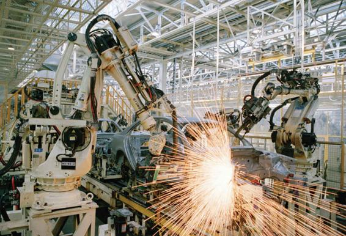

Will Automation Make Things Better or Worse for Workers?
The relationship between technology and work has long been of interest to sociologists. How is our experience of work affected by the type of technology involved? As industrialization has progressed, technology has assumed an ever-greater role at the workplace—from factory automation to the computerization of office work. The current information-technology revolution has attracted renewed interest in this question. Technology can lead to greater efficiency and productivity, but how does it affect the way work is experienced by those who carry it out? For sociologists, one of the main questions is how the move to more complex systems influences the nature of work and the institutions in which it is performed.
The concept of automation, or programmable machinery, was introduced in the mid-1800s, when Christopher Spencer, an American, invented the first fully automatic turret lathe, a programmable lathe that made screws, nuts, and gears. The spread of automation provoked a heated debate among sociologists and experts in industrial relations over the effect of the new technology on workers, their skills, and their level of commitment to their work. In his influential book Labor and Monopoly Capital (1974), Harry Braverman argued that automation was part of the overall “de-skilling” of the industrial labor force. By imposing organizational techniques that broke up the labor process into specialized tasks, managers were able to exert control over the workforce. In both industrial settings and modern offices, the introduction of technology contributed to this overall degradation of work by limiting the need for creative human input.
One function of automation, Braverman argued, was to increase control over workers; all that is required in a highly automated factory is an unthinking, unreflective body capable of endlessly carrying out the same unskilled task. Although Braverman was primarily writing about the kind of assembly line work that occurs in automobile-manufacturing facilities, his arguments apply with equal force to the giant electronics plants in China that assemble our smartphones and computers, the factories throughout the world that make our clothing, and the fast-food workers in McDonald’s and Taco Bell who serve up our orders in a matter of minutes. The introduction of computerized technology in the workplace has resulted in a two-tiered workforce composed of a small group of highly skilled professionals with high degrees of flexibility and freedom in their jobs and a larger group of clerical, service, and production workers who lack such autonomy.
Technology has also led to the offshoring of manufacturing and service-sector jobs to countries where wages are lower. Those firms that remain in the United States often employ fewer workers, thanks also to advances in technology (Sherk, 2010): automobile plants where robots assemble cars, banks that use ATMs, supermarkets with automatic checkout services. While much has been made of “twenty-first-century onshoring”—the return of some manufacturing jobs to the United States—these jobs often pay low wages, and, thanks to automation, also require fewer workers (Semuels, 2015).
A little more than ten years ago, the Princeton economist Alan Blinder conducted a detailed analysis of the U.S. occupational structure, classifying hundreds of different jobs in terms of the likelihood they would be offshored. In a widely cited paper, he concluded that between 22 and 29 percent of all jobs, involving between 29 million and 38 million U.S. workers, were potentially offshorable. Many of the most highly vulnerable jobs, he argued, were not in manufacturing, but rather were white-collar jobs such as computer programmers, accountants, statisticians, or film editors (Blinder, 2007).
How well did Blinder’s predictions stand the test of time? The answer is, not very well. A recent study (Ozimek, 2019) looked again at jobs supposedly threatened by offshoring and concluded that instead of going to countries like India or China, many of these jobs were going to—the homes of U.S. workers! According to this recent study, at least 5 percent of the U.S. workforce now work remotely, thanks to advances in information technology—and this doesn’t include workers who do at least part of their work from home. In fact, some of these workers are even working remotely for non-U.S. clients. It turns out that U.S. knowledge workers often have a competitive advantage over foreign workers: they share a common language and culture with their employers, not to mention eliminating the challenge of coordinating work a half a world (and twelve time zones) away. Blinder himself, in acknowledging the new study, admitted that “Where in retrospect I missed the boat is in thinking that the gigantic gap in labor costs between here and India would push it to India rather than to South Dakota. . . . There were other aspects of the costs to moving the activities that we weren’t thinking about very much back then when people were worrying about offshoring” (Casselman, 2019)
If offshoring has not created a “white-collar job apocalypse” (Casselman, 2019), what about artificial intelligence, rapid advances in such areas as business intelligence, decision making, and “big data” analysis, which hold the promise of automating occupations that currently require college degrees? The services provided by professionals such as lawyers, accountants, radiologists, and many middle managers can increasingly be performed by artificial intelligence software. One estimate is that as many as two-fifths of all jobs in the United States could be replaced by software (Brynjolfsson and McAfee, 2014; Ford, 2009, 2010). As one technology writer has noted, “The evidence is irrefutable that computerized automation, networks and artificial intelligence (AI)—including machine-learning, language-translation, and speech- and pattern-recognition software—are beginning to render many jobs simply obsolete” (Economist, 2011). Some commentators predict that robotics will result in a jobless future in which machines do most of our labor: “Robots will drive our cars, manufacture our goods, and do our chores” (Wadwha, 2014).
Yet automation has also created a host of new services, from ride-sharing services, to the marketing giant Amazon, which has put many small (and some large) retailers out of business. Why wait to hail down a taxi, when you can hail an Uber or Lyft on your phone, have one arrive usually within a few minutes thanks to GPS location services, and have your credit card automatically charged with no cash or even physical credit card needed? Why trudge down to the local bookstore, appliance store, furniture store, or perhaps even grocery store (now that Amazon has bought Whole Foods), looking for an item that may or may not be there, and wait in line to pay, when with a click on your smart phone Amazon can usually deliver pretty much anything to your home within a couple of days, often at bargain basement prices?
Automation has made all this possible. Whether the seeming benefits to consumers will be outweighed by the cost to workers and small business remains to be seen. Uber and Lyft drivers—like others in the Gig Economy—may enjoy the freedom to operate out of their homes (or cars), but they are also notoriously underpaid, and lack basic benefits such as health insurance or retirement packages (Zoepf et al., 2014; Rao, 2019). Amazon has resulted in the demise of chains that specialized in selling books, toys, and sporting goods, leading to a loss of jobs in those industries (Pandey, 2018). Yet Amazon employs hundreds of thousands of workers in its warehouses, and recently announced that it was spending $700 million to retrain a third of its workforce to do high-tech tasks needed to run its physical operation (Casselman and Satariano, 2019).
Automation and artificial intelligence are disruptive technologies, much like the steam engine once was, that ushered in the Industrial Revolution. How this will play out over your lifetimes will shape not only your world of consumption, but perhaps more importantly, your world of work.
Table 14.3APPLYING SOCIOLOGY TO WORK AND ECONOMIC LIFE
CONCEPT
APPROACH TO UNDERSTANDING WORK AND ECONOMIC LIFE
CONTEMPORARY APPLICATION
Fordism
A dominant form of production in the twentieth century, pioneered by Henry Ford (for whom it is named). Characterized by large, bureaucratic corporations that design, market, and mass produce products on assembly lines that require workers to repeatedly perform the same task. While this greatly increases productivity, it also results in a high degree of management control over factory workers.
General Motors, whose revenues made it the largest corporation in the mid-twentieth century, typifies this process.
Post-Fordism
A dominant form of production in the twenty-first century, characterized by flexible business structures in which large corporations specialize in the most profitable activities (designing and marketing their products), with actual manufacturing outsourced to independent contract factories who compete with one another by lowering their costs in order to get the work.
Giant retailers such as Walmart, whose revenues made it the largest corporation in the early twenty-first century, typifies this process.
Global Outsourcing
The principal way that flexible production is achieved in the early twenty-first century, in which factory production is outsourced to low-wage countries around the world. This often results in low wages, harsh and unsafe working conditions, and the absence of environmental regulations, as factories around the world compete with one another for manufacturing.
The apparel and electronic assembly industries, in which our clothing and computer electronics are made in factories in China, India, or in developing countries in Asia and Africa.
The Informal Economy
That sector of the economy that is outside the sphere of regular employment (“off the books”), and therefore unreported to the government. Common in wealthy countries, and often a major part of the economy in poor countries. Since it is unregulated, workers lack legal protections.
Includes many activities that would be legal if reported (such as housecleaning, yardwork, babysitting), as well as illegal activities (such as drug dealing, criminal behavior in general).
The Gig Economy
A recently emerging sector of the economy that involves extreme flexibility: temporary or freelance workers on short-term contracts, often operating on their own, with low pay, the absence of benefits such as health insurance or retirement packages, and few or no legal protections.
Lyft and Uber drivers; Instacart; TaskRabbit; Handy; Thumbtack; Fiverr.
Robots weld car frames at the Hyundai factory in Beijing.